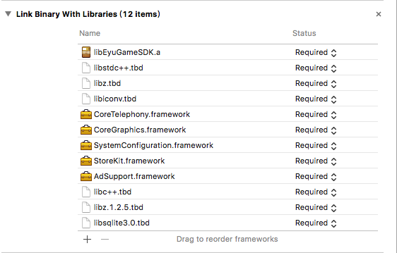
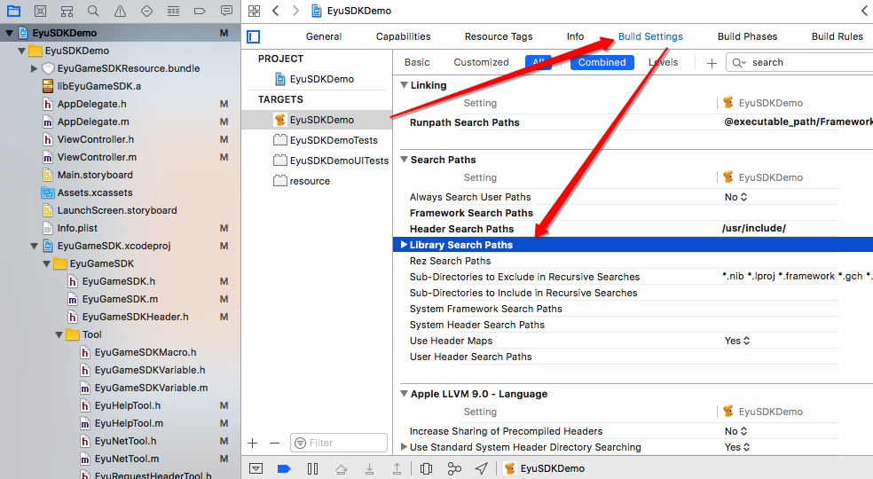
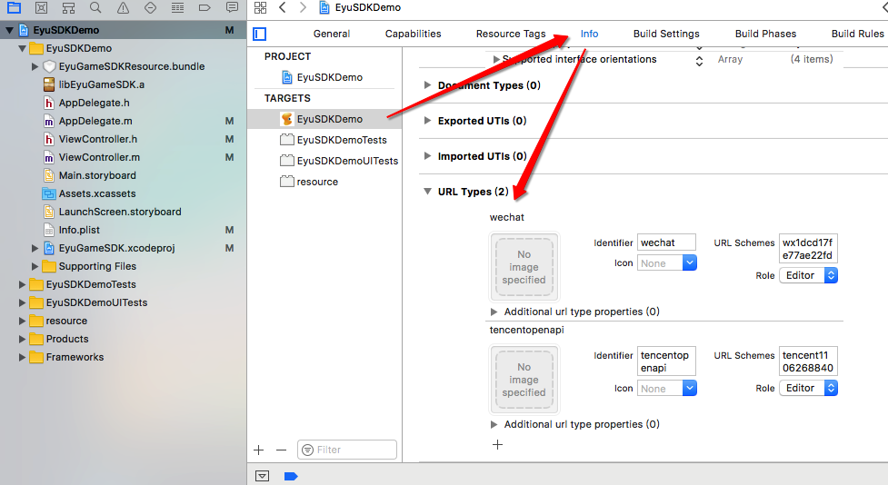
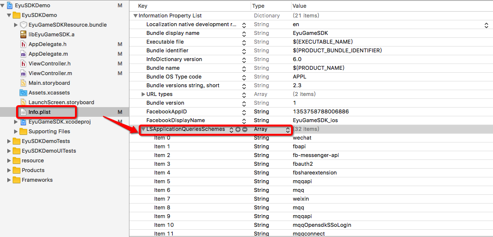
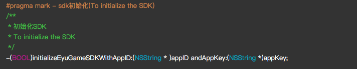
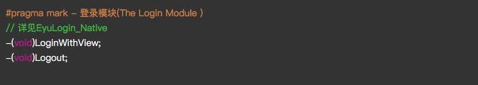
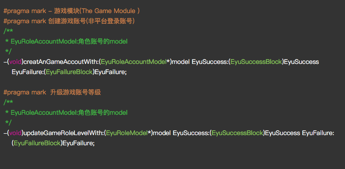
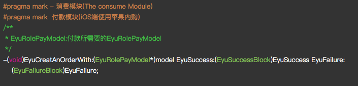

#EyuGameSDK(v.2.0)接入文档说明
准备材料
- EyuGameSDK.a
- 静态库 包含微信 QQ第三方授权登录sdk
- 使用了MBHUD
- EyuGameSDKResource.bundle
- 包含icon对应的image
- xib/storyboard打包之后变成的nib
配置依赖库及其设置
请按照下图的名单依次添加依赖库到项目中
请在Targets(选中项目target)->build Setting ->search paths ->library search paths添加好libEyugamesdk.a的路径
按照如图Targets(选中项目target)->info ->url types 配置好根据您在微信开放平台,QQ开放平台申请的AppId和KEY
配置白名单(由于国内的SDK需要支持 QQ 和 微信 第三方登录)打开info.plist文件添加对应的字段,可以右键点击info.plist文件open as sourcecode 将下列文字复制添加进去即可

|
|
开始接入
导入SDK的头文件
1#import "EyuGameSDK/EyuGameSDKHeader.h"在Appdelegate中程序最早启动的地方加入初始化sdk的方法
|
|
处理连接回调保证唤起第三方APP时候保证能接受到信息
12345678910111213141516-(BOOL)application:(UIApplication *)application handleOpenURL:(NSURL *)url{NSLog(@"--------url = %@-----",url);NSString * urlstring = url.absoluteString;NSLog(@"urlstring = %@",urlstring);if ([urlstring containsString:@"tencent"]) {//QQreturn [TencentOAuth HandleOpenURL:url];}else if ([urlstring containsString:@"wx"]){[EyuLogin_WeChat WeChatHandleOpenURL:url];return YES;}else{return YES;}}在需要登录窗的控制器 viewdidload 方法加入带登录视图的代码
|
|
🚀 成功
Copyright © 2017广州易娱游戏科技有限公司 Copyright Holder All Rights Reserved.
- 如果是带视图的登录方式上面就已经完成SDK所需要的接入,下面详细分解一下sdk的架构和使用注意点
- 伞头文件为 EyuGameSDKHeader.h
- EyuGameSDK.h 有四个模块:初始化模块,登录模块,游戏模块和充值模块
初始化模块:

需要传入与易娱发行后台分配的 APPID 和appkey登录模块:

总体分为三个平台
如果使用带视图的登录方式 对应的登录和退出方法如上图展示,如果使用的是非视图登录方式,您需要对登录模块中的子元素有一定的概念了解,依照平台对应的登录方法存在 不同的类里面.
- _易娱平台(EyuLoginNative) :包含了匿名登录/账号密码登录/手机验证码登录
- _微信(EyuLoginWeChat):第三方授权机制
- _QQ(EyuLoginQQ):第三方授权机制
- 游戏模块:

游戏模块中我们负责统计用户的角色账号统计,以及角色升级统计 - 充值模块:

在这个模块中使用注意点是:苹果内购的申请,对应的计费点需要明确.